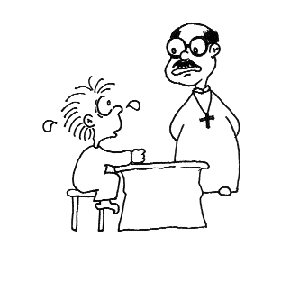

| Maître et disciples racontent des blagues |
Blagues par les initiés de Los Angeles, États-Unis (initialement en Au lacien) |
Un homme d'affaires avait deux fils. Un de six ans et un autre de neuf. Comme les deux parents étaient occupés à leurs affaires, ils n'avaient pas le temps de s'occuper de l'éducation de leurs enfants. Alors, les deux enfants étaient devenus très agités et actifs et se sont impliqués dans des bagarres et des vols mineurs. Après avoir été au tribunal pour les mauvaises actions des enfants, les parents étaient si découragés, qu'ils se sont mis d'accord pour emmener les enfants à l'église du village et de demander au curé de s'occuper de leur éducation en espérant qu'ils deviendront de meilleurs garçons. Devant leur insistance, le curé a finalement accepté de consacrer de son temps libre à éduquer les enfants. Il a demandé au couple de lui envoyé d'abord, le cadet. Le couple était content. Le lendemain matin, ils ont amené leur plus jeune fils à l'église et sont rentrés chez eux heureux.
 Le curé a emmené le garçon dans son bureau dans l'intention de lui enseigner quelques notions de religion et la vertu. D'une voix douce, il a interrogé le garçon: "sais-tu où est Dieu?" Le garçon n'a rien dit. Il était calme et regardait autour de la pièce. Il regardait les photos sur le mur, et dans les coins de la pièce, puis il s'est penché pour regarder sous la table, etc. Finalement, il a regardé le curé sans dire un mot.
Le curé s'est senti gêné, mais il lui a reposé la question à contrecoeur. Cette fois, il a haussé le ton en croyant que, peut-être le garçon ne l'avait pas bien entendu. Il a répété: "sais-tu où est Dieu?" En entendant cette voix, le visage du garçon paraissait un peu effrayé. Toutefois, en regardant partout dans la pièce, il n'a pas dit un seul mot et a regardé à nouveau le curé.
Le curé ne l'a pas supporté. Il a montré du doigt le visage du garçon et a crié très fort: "Je...je, je te le demande pour la dernière fois. Sais-tu où est Dieu?"
Cette fois, le garçon a eu vraiment très peur. Il a repoussé sa chaise en vitesse et est rentré en courant à la maison. En arrivant à la maison, il a regardé son frère. Sans dire un mot, il l'a entraîné dans un coin et lui a dit d'une voix tremblante: "cette fois-ci, c'est grave!" La vue de son jeune frère dans un tel état l'a inquiété. Il lui a demandé: "que s'est-il passé ? Tu as l'air si inquiet ?" Le cadet a répondu d'une voix tremblante: "on a volé Dieu, et l'on croit...croit... que c'est nous qui l'avons volé !!!"